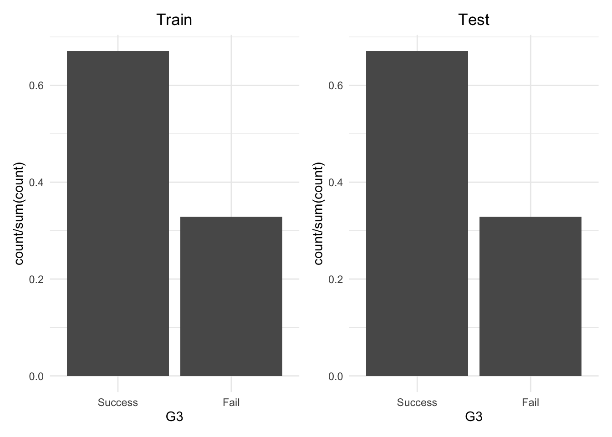
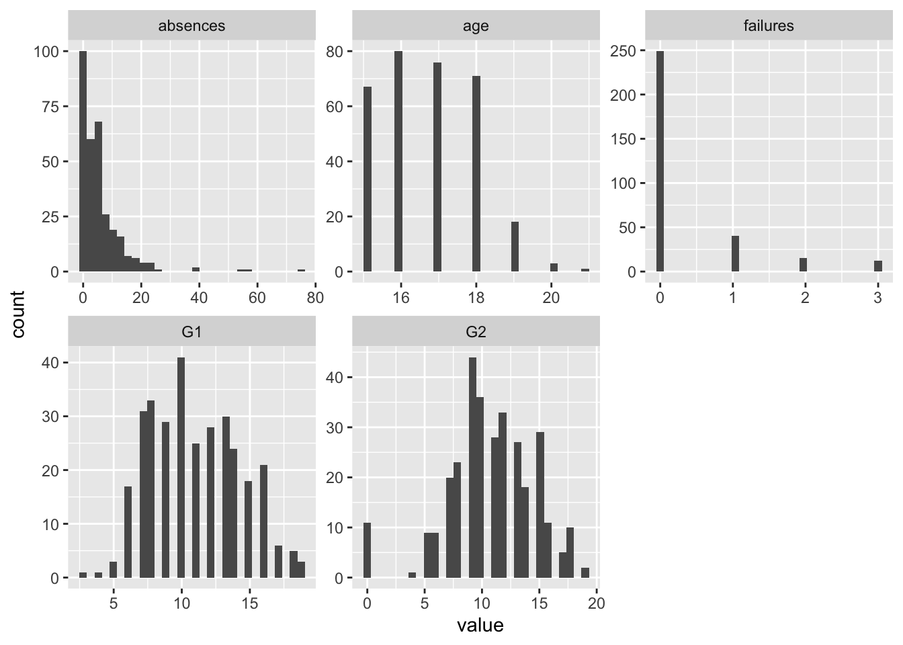
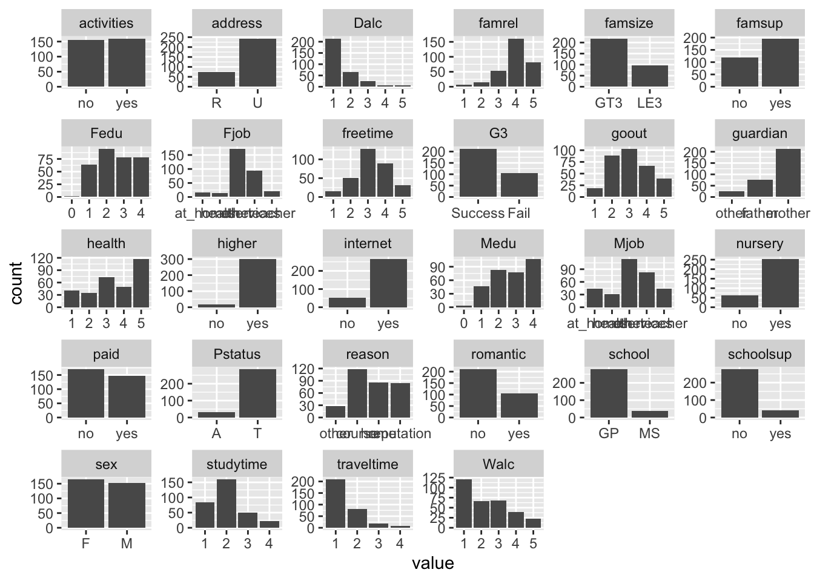

library(tidyverse)
library(tidymodels)Assignment I
วัตถุประสงค์ของงานชิ้นนี้คือการพัฒนาโมเดลเพื่อจำแนกผลสัมฤทธิ์ของนักเรียนจากชุดข้อมูล student-mat.csv โดยใช้ tidymodels ใน R โดยที่นิสิตจะต้องดำเนินการต่อไปนี้:
ดำเนินการทำ feature engineering โดยใช้แนวทางการจัดการข้อมูล 3 แบบ
ฝึกสอนโมเดลการเรียนรู้ของเครื่อง 3 โมเดล ได้แก่ Linear Regression, Lasso Regression และ Ridge Regression
ประเมินประสิทธิภาพของโมเดลจำแนกโดยใช้ Accuracy, Sensitivity, Specificity, F-measure และ AUC
เปรียบเทียบประสิทธิภาพของวิธีการจัดการข้อมูลที่แตกต่างกันและโมเดลที่แตกต่างกัน
สรุปและแปลความหมายผลลัพธ์
1. เรียก library ที่จำเป็น
2. นำเข้าข้อมูล
data <- read_delim("student-mat.csv", delim = ";")
data <- data %>% mutate(G3 = ifelse(G3 >= 10, 1, 0)) %>%
mutate(G3 = factor(G3, levels=c(1,0), labels=c("Success", "Fail")))3. แบ่งชุดข้อมูลออกเป็นสองส่วน
#set.seed(123)
split <- initial_split(data, prop = 0.8, strata = "G3")
train <- training(split)
test <- testing(split)
library(patchwork)
train %>% ggplot(aes(x = G3)) + geom_bar(aes(y = after_stat(count/sum(count)))) +
labs(title = "Train") +
theme_minimal() +
theme(plot.title = element_text(hjust = 0.5)) +
test %>% ggplot(aes(x = G3)) + geom_bar(aes(y = after_stat(count/sum(count)))) +
labs(title = "Test") +
theme_minimal() +
theme(plot.title = element_text(hjust = 0.5))
4. EDA + Feature Engineering
ปกติการสำรวจและการทำ feature engineering เป็นกระบวนการที่ไม่ได้แยกกันขาด แต่จะดำเนินการสลับไปมาเพื่อหา solution ที่เหมาะสมมากที่สุดโดยใช้ข้อมูลเป็นฐาน
ทำความเข้าใจข้อมูล
ตรวจสอบประเภทของตัวแปร
ตรวจสอบ missing value
สำรวจการแจกแจงและตรวจสอบค่าผิดปกติ
สำรวจความสัมพันธ์ระหว่างตัวแปรตามกับตัวแปรอิสระ
สำรวจความสัมพันธ์ระหว่างตัวแปรอิสระ
โดยปกติเราจะไม่รีบแก้ปัญหาที่พบตามข้อสังเกต เราควรดำเนินการสร้าง baseline model อาจเป็น linear regression หรือ decision tree ง่าย ๆ เพื่อดูประสิทธิภาพคร่าว
ถ้าพบว่าประสิทธิภาพยังไม่ดี จะวิเคราะห์สาเหตุที่เป็นไปได้จากนั้นลองทำ feature engineering เพื่อแก้ปัญหาแล้วจึงไปใช้ในโมเดลที่มีการปรับแต่งค่า hyperparameter ซึ่งก็อาจจะต้องมีการปรับแต่งไปมาอีกระยะหนึ่ง
ถ้าพบว่าประสิทธิภาพดีแล้ว อาจจะพิจารณาว่าเราสามารถปรับแต่ง feature ในลักษณะไหนได้อีกบ้างเพื่อให้มีประสิทธิภาพดีขึ้น หรือในกรณีที่ต้องการอธิบายความสัมพันธ์ระหว่างตัวแปรอาจพิจารณาปรับแต่ง feature ให้มีความหมายที่เหมาะสมกับการอธิบาย จากนั้นจึงนำข้อมูลไปใช้ในโมเดลที่มีการปรับแต่ง hyperparameter ซึ่งก็อาจจะต้องมีการปรับแต่งไปมาเช่นเดียวกัน
4.1 สำรวจข้อมูลเบื้องต้น
train %>%
glimpse()Rows: 316
Columns: 33
$ school <chr> "GP", "GP", "GP", "GP", "GP", "GP", "GP", "GP", "GP", "GP",…
$ sex <chr> "F", "F", "F", "M", "F", "F", "F", "F", "F", "F", "M", "F",…
$ age <dbl> 18, 17, 15, 17, 15, 16, 15, 16, 15, 15, 15, 16, 16, 16, 15,…
$ address <chr> "U", "U", "U", "U", "R", "U", "U", "U", "U", "U", "U", "U",…
$ famsize <chr> "GT3", "GT3", "GT3", "GT3", "GT3", "GT3", "GT3", "LE3", "LE…
$ Pstatus <chr> "A", "A", "T", "T", "T", "T", "T", "T", "A", "T", "T", "T",…
$ Medu <dbl> 4, 4, 4, 3, 2, 2, 2, 2, 4, 4, 1, 1, 4, 3, 2, 1, 3, 4, 2, 4,…
$ Fedu <dbl> 4, 4, 4, 2, 4, 2, 3, 2, 3, 4, 2, 2, 3, 1, 2, 1, 2, 4, 2, 4,…
$ Mjob <chr> "at_home", "other", "teacher", "services", "services", "ser…
$ Fjob <chr> "teacher", "teacher", "health", "services", "health", "serv…
$ reason <chr> "course", "home", "reputation", "course", "course", "home",…
$ guardian <chr> "mother", "mother", "mother", "mother", "mother", "mother",…
$ traveltime <dbl> 2, 2, 1, 1, 1, 1, 2, 2, 1, 1, 1, 1, 1, 1, 2, 1, 1, 2, 1, 1,…
$ studytime <dbl> 2, 2, 2, 1, 3, 1, 1, 2, 2, 2, 2, 2, 3, 4, 2, 2, 2, 2, 2, 2,…
$ failures <dbl> 0, 0, 0, 3, 0, 2, 0, 1, 0, 1, 0, 0, 0, 0, 0, 2, 0, 2, 0, 0,…
$ schoolsup <chr> "yes", "yes", "no", "no", "yes", "no", "no", "yes", "yes", …
$ famsup <chr> "no", "yes", "yes", "yes", "yes", "yes", "yes", "no", "yes"…
$ paid <chr> "no", "no", "yes", "no", "yes", "yes", "no", "no", "yes", "…
$ activities <chr> "no", "no", "no", "yes", "yes", "no", "yes", "yes", "yes", …
$ nursery <chr> "yes", "yes", "yes", "yes", "yes", "no", "yes", "yes", "yes…
$ higher <chr> "yes", "yes", "yes", "yes", "yes", "yes", "yes", "yes", "ye…
$ internet <chr> "no", "no", "yes", "yes", "yes", "yes", "no", "yes", "yes",…
$ romantic <chr> "no", "no", "no", "no", "no", "no", "no", "no", "yes", "no"…
$ famrel <dbl> 4, 4, 3, 5, 4, 1, 3, 4, 5, 4, 4, 4, 3, 4, 4, 3, 4, 4, 4, 4,…
$ freetime <dbl> 3, 1, 3, 5, 3, 2, 5, 3, 2, 4, 3, 4, 4, 3, 1, 3, 4, 4, 3, 1,…
$ goout <dbl> 4, 4, 3, 5, 2, 2, 1, 3, 2, 4, 2, 3, 4, 3, 3, 4, 4, 4, 4, 3,…
$ Dalc <dbl> 1, 1, 1, 2, 1, 1, 1, 2, 1, 1, 1, 1, 2, 1, 1, 2, 1, 2, 1, 3,…
$ Walc <dbl> 1, 1, 2, 4, 1, 3, 1, 2, 1, 1, 1, 1, 4, 2, 3, 4, 1, 3, 2, 5,…
$ health <dbl> 3, 1, 2, 5, 5, 5, 5, 5, 5, 3, 5, 1, 4, 5, 4, 5, 5, 5, 2, 5,…
$ absences <dbl> 6, 6, 0, 16, 2, 14, 0, 14, 8, 2, 2, 4, 2, 4, 2, 2, 10, 6, 4…
$ G1 <dbl> 5, 6, 10, 6, 10, 6, 8, 10, 8, 7, 9, 8, 10, 7, 8, 8, 7, 7, 8…
$ G2 <dbl> 6, 5, 8, 5, 9, 9, 7, 10, 8, 7, 10, 10, 9, 7, 9, 6, 6, 9, 7,…
$ G3 <fct> Fail, Fail, Fail, Fail, Fail, Fail, Fail, Fail, Fail, Fail,…ปรับเปลี่ยนสถานะของตัวแปรให้ถูกประเภท คราวนี้เราจะทำทุกอย่างภายใต้ recipe เพื่อสร้าง pipeline ที่ใช้ในการปรับแต่งข้อมูลให้สามารถใช้ในกรณีทั่วไปได้
train_preproced <- recipe(G3 ~. , data = train) %>%
## ?step_mutate_at()
step_mutate_at(school, sex, address, famsize, Pstatus,
Medu, Fedu, Mjob, Fjob, reason, guardian,
traveltime, studytime, schoolsup,
famsup, paid, activities, nursery, higher,internet,
romantic, famrel, freetime, goout, Dalc, Walc, health,
fn = ~factor(.)) %>%
prep() %>%
juice()จากนั้นเราลองสำรวจ distribution ของตัวแปรอิสระทุกตัวคร่าว ๆ ก่อน โดยจำแนกเป็นตัวแปรเชิงปริมาณและตัวแปรจัดประเภท
note:
absences เบ้ขวามาก ควรแก้ปัญหา เช่น แปลงด้วย power function หรือทำ discretization
age มีค่าที่เป็นไปได้น้อย อาจปรับเป็นตัวแปรจัดประเภท เช่น เด็กมัธยมต้น/ปลาย อะไรแนวนี้ แต่ก็ดูอีกที
failures สังเกตว่ามี majority อยู่กลุ่มเดียวอาจทำให้ตัวแปรนี้มีความแปรปรวนต่ำ ถ้ารันรอบแรกไม่ work อาจลองแบ่งเป็นสองกลุ่มคือ ไม่เคยสอบตก กับสอบตก แต่ก็ดูอีกทีเหมือนกัน
G2 กับ G3 ดูโอเค
train_preproced %>%
select_if(is.numeric) %>%
pivot_longer(cols = everything()) %>%
ggplot(aes(x = value)) + geom_histogram() +
facet_wrap(~name, scale = "free")
สำหรับตัวแปรจัดประเภทพบว่ามีตัวแปรหลายตัวที่การแจกแจงไม่สมดุล ซึ่งสะท้อนว่ามี variance ต่ำ และไม่มีความสามารถในการทำนาย เราอาจจะ screen หาตัวแปรพวกนี้เอาไว้เบื้องต้นก่อน
train_preproced %>%
select_if(is.factor) %>%
pivot_longer(cols = everything()) %>%
ggplot(aes(x = value)) + geom_bar() +
facet_wrap(~name, scale = "free")
ใน recipe มีฟังก์ชัน step_zv() และ step_nzv() ช่วยในการคัดเลือกตัวแปรที่มีความแปรปรวนต่ำ ๆ ออกไป ซึ่งเป็นการคัดเลือกตัวแปรที่มีความสำคัญน้อย ๆ ออกไป
recipe(G3 ~. , data = train) %>%
## ?step_mutate_at()
step_mutate_at(school, sex, address, famsize, Pstatus,
Medu, Fedu, Mjob, Fjob, reason, guardian,
traveltime, studytime, schoolsup,
famsup, paid, activities, nursery, higher,internet,
romantic, famrel, freetime, goout, Dalc, Walc, health,
fn = ~factor(.)) %>%
## step_zv(all_predictors()) %>%
step_nzv(all_predictors()) %>%
prep() %>% tidy(2)# A tibble: 0 × 2
# ℹ 2 variables: terms <chr>, id <chr>เราสามารถคำนวณ freq_ration ได้เองด้วยง่าย ๆ
train %>%
mutate_at(vars(school, sex, address, famsize, Pstatus,
Medu, Fedu, Mjob, Fjob, reason, guardian,
traveltime, studytime, schoolsup,
famsup, paid, activities, nursery, higher,internet,
romantic, famrel, freetime, goout, Dalc, Walc, health),
factor) %>%
select_if(is.factor) %>%
pivot_longer(cols = everything()) %>%
group_by(name, value) %>%
summarise(p = n()/nrow(train)) %>%
slice_max(p, n = 2) %>%
group_by(name) %>%
## calculate the frequency ratio
mutate(freq_ratio = max(p)/min(p)) %>%
ungroup() %>%
select(name, freq_ratio) %>%
unique() %>%
slice_max(freq_ratio, n=5) %>%
ungroup() -> nzv_vars
nzv_vars# A tibble: 5 × 2
name freq_ratio
<chr> <dbl>
1 higher 18.8
2 Pstatus 9.19
3 school 7.32
4 schoolsup 6.9
5 internet 5.204.2 ลองสำรวจ missing value
train %>%
select_if(~any(is.na(.)))# A tibble: 316 × 04.3 การตรวจสอบค่าผิดปกติ
การตรวจสอบค่าผิดปกติเป็นกระบวนการที่ควรทำทั้งก่อนและภายหลังการสร้างโมเดล
ก่อนการสร้างโมเดลเราสามารถตรวจสอบจากการแจกแจงของข้อมูลโดยตรงว่ามีค่าผิดปกติในเชิงที่เป็นไปไม่ได้มั้ย? หรือมีค่าผิดปกติที่เป็นค่าสุดโต่งในตัวแปรไหนบ้าง?
หลังการสร้างโมเดล เราสามารถตรวจสอบได้ว่ามีค่าสังเกตใดที่อยู่นอกเหนือแนวโน้มการทำนายของโมเดลอย่างผิดปกติบ้าง และค่าสังเกตนั้นมีอิทธิพลต่อการเรียนรู้ของโมเดลหรือไม่อย่างไร
4.4 ตรวจสอบความสัมพันธ์ระหว่างตัวแปรตามและตัวแปรอิสระ
## install.packages("vip")
library(vip)“lm/glm - In (generalized) linear models, variable importance is typically based on the absolute value of the corresponding t-statistics (Bring, 1994). For such models, the sign of the original coefficient is also returned. By default, type =”stat” is used; however, if the inputs have been appropriately standardized then the raw coefficients can be used with type = “raw”. Note that Bring (1994) provides motivation for using the absolute value of the associated t-statistics.”
\[ VIP_j = |\frac{\beta_j}{SE(\beta_j)}| \]
baseline_rec <- recipe(G3 ~. , data = train) %>%
## ?step_mutate_at()
step_mutate_at(school, sex, address, famsize, Pstatus,
Medu, Fedu, Mjob, Fjob, reason, guardian,
traveltime, studytime, schoolsup,
famsup, paid, activities, nursery, higher,internet,
romantic, famrel, freetime, goout, Dalc, Walc, health,
fn = ~factor(.)) %>%
prep() %>% juice()
library(vip)
simple_logit <- function(data, x) {
library(vip)
fit_glm <- glm(as.formula(paste("G3 ~", x)), data = data, family = "binomial")
vi(fit_glm)
}
vips <- map_df(.x = names(baseline_rec %>% select(-G3)),
.f = ~ simple_logit(data = baseline_rec %>% mutate(G3 = 1-(as.numeric(G3) - 1)),
x = .x))
vips %>%
arrange(desc(Importance))# A tibble: 69 × 3
Variable Importance Sign
<chr> <dbl> <chr>
1 G1 8.58 POS
2 G2 6.69 POS
3 failures 5.53 NEG
4 age 2.89 NEG
5 guardianother 2.61 NEG
6 health4 2.32 NEG
7 health3 2.18 NEG
8 schoolsupyes 2.07 NEG
9 higheryes 1.97 POS
10 health5 1.93 NEG
# ℹ 59 more rowsพิจารณาว่าจะเกิดปัญหา multicollinearity มั้ย
baseline_rec %>%
select(Walc)# A tibble: 316 × 1
Walc
<fct>
1 1
2 1
3 2
4 4
5 1
6 3
7 1
8 2
9 1
10 1
# ℹ 306 more rowsfit_all <- glm(G3 ~ ., data = baseline_rec %>% mutate(G3 = 1-(as.numeric(G3) - 1)))
library(car)
vif(fit_all) %>%
data.frame() %>%
rownames_to_column() %>%
arrange(desc(GVIF)) rowname GVIF Df GVIF..1..2.Df..
1 Walc 8.583901 4 1.308310
2 Medu 7.987258 4 1.296581
3 Dalc 7.127205 4 1.278247
4 Mjob 6.490996 4 1.263394
5 G1 5.181704 1 2.276336
6 Fedu 4.997265 4 1.222761
7 G2 4.648458 1 2.156028
8 Fjob 4.253935 4 1.198392
9 goout 3.923755 4 1.186350
10 freetime 3.804819 4 1.181794
11 health 3.081967 4 1.151075
12 studytime 2.860972 3 1.191477
13 traveltime 2.808104 3 1.187779
14 famrel 2.397587 4 1.115506
15 guardian 2.357962 2 1.239179
16 reason 2.272961 3 1.146653
17 age 2.039526 1 1.428120
18 school 1.909122 1 1.381710
19 sex 1.819229 1 1.348788
20 failures 1.805069 1 1.343529
21 address 1.707595 1 1.306750
22 paid 1.648279 1 1.283853
23 schoolsup 1.514678 1 1.230723
24 higher 1.496197 1 1.223191
25 famsup 1.491745 1 1.221370
26 internet 1.452030 1 1.205002
27 absences 1.411204 1 1.187941
28 romantic 1.372187 1 1.171404
29 famsize 1.370101 1 1.170513
30 nursery 1.356663 1 1.164759
31 Pstatus 1.282227 1 1.132355
32 activities 1.240924 1 1.113967vif(fit_all) %>%
data.frame() %>%
rownames_to_column() %>%
arrange(desc(GVIF)) %>%
filter(GVIF > 4) %>%
pull(rowname) -> multi_features
multi_features[1] "Walc" "Medu" "Dalc" "Mjob" "G1" "Fedu" "G2" "Fjob"fit_all %>%
predict() %>%
data.frame() %>%
rename(pred_prob = 1) %>%
mutate(pred_class = ifelse(pred_prob > 0.5, 1, 0)) %>%
mutate(pred_class = factor(pred_class, levels = c(1, 0), labels = c("Success", "Fail"))) %>%
bind_cols(baseline_rec %>% select(G3)) %>%
conf_mat(truth = G3, estimate = pred_class) Truth
Prediction Success Fail
Success 200 8
Fail 12 96